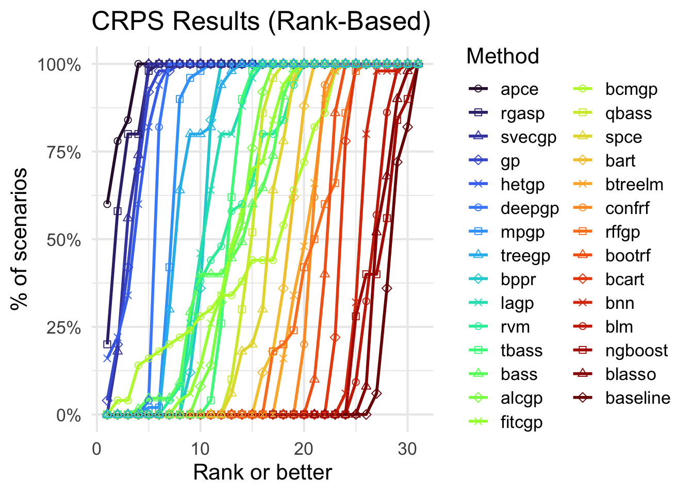
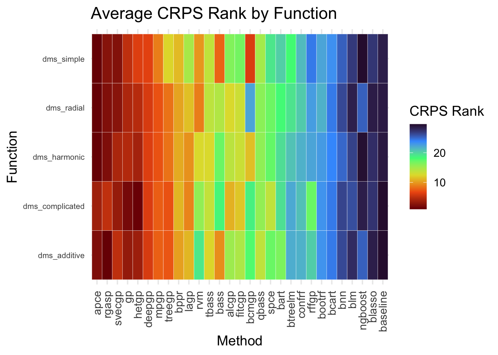
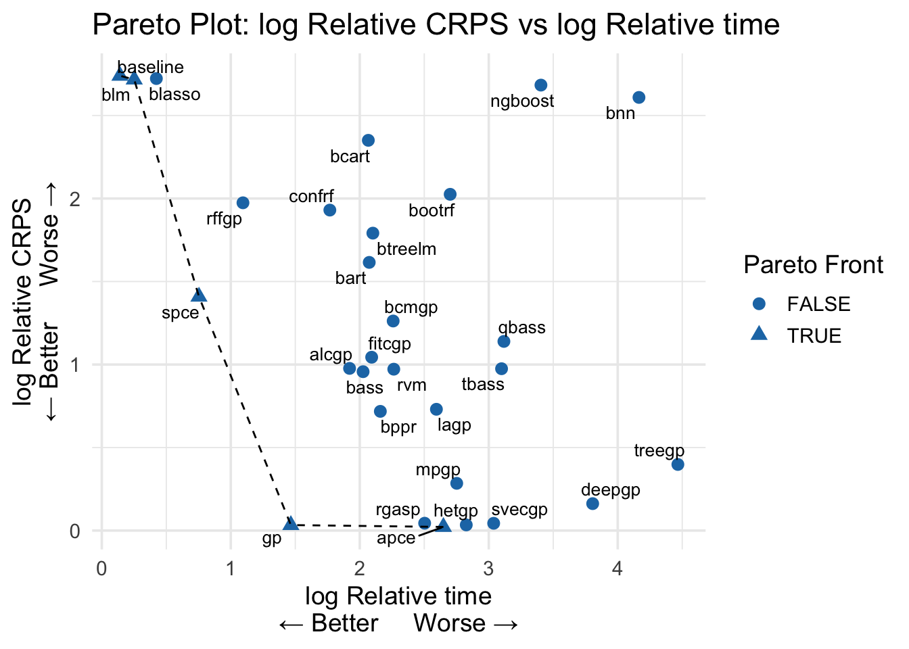
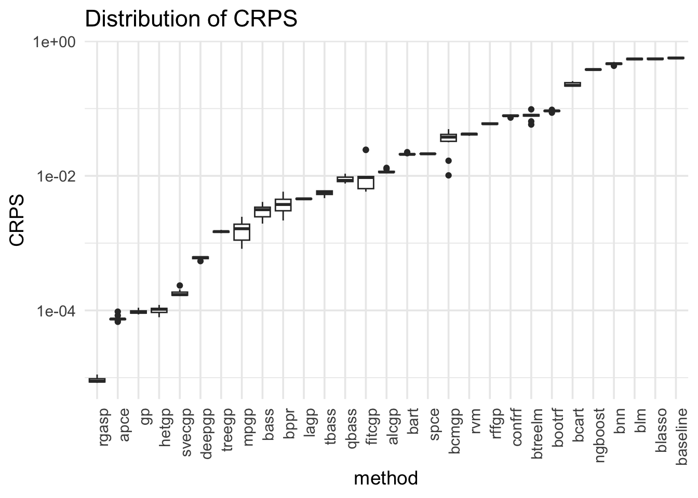

devtools::install_github("knrumsey/duqling")
library(duqling)duqling: A Comprehensive Guide
0. Package Installation
To install duqling, you will need either devtools or remotes.
1. Benchmark test functions
duqling includes a huge library of canonical test functions used in uncertainty quantification and emulation. Details and references for each function can be found in the documentation and for many functions the Simon Fraser Virtual Library of Simulation Experiments, which shares many test functions with duqling.
Exploring with quack()
For a list of all available functions:
quack() fname input_dim response has_categorical stochastic
1 const_fn 1 univariate FALSE FALSE
2 forrester1 1 univariate FALSE FALSE
3 forrester1_low_fidelity 1 univariate FALSE FALSE
4 grlee1 1 univariate FALSE FALSE
5 banana 2 univariate FALSE FALSE
6 dms_additive 2 univariate FALSE FALSE
7 dms_complicated 2 univariate FALSE FALSE
8 dms_harmonic 2 univariate FALSE FALSE
9 dms_radial 2 univariate FALSE FALSE
10 dms_simple 2 univariate FALSE FALSE
11 foursquare 2 univariate FALSE FALSE
12 grlee2 2 univariate FALSE FALSE
13 lim_non_polynomial 2 univariate FALSE FALSE
14 lim_polynomial 2 univariate FALSE FALSE
15 multivalley 2 univariate FALSE FALSE
16 ripples 2 univariate FALSE FALSE
17 simple_poly 2 univariate FALSE FALSE
18 squiggle 2 univariate FALSE FALSE
19 star2 2 univariate FALSE FALSE
20 twin_galaxies 2 univariate FALSE FALSE
21 const_fn3 3 univariate FALSE FALSE
22 cube3 3 univariate FALSE FALSE
23 cube3_rotate 3 univariate FALSE FALSE
24 detpep_curve 3 univariate FALSE FALSE
25 Gfunction 3 univariate FALSE FALSE
26 ishigami 3 univariate FALSE FALSE
27 rabbits 3 univariate FALSE FALSE
28 sharkfin 3 univariate FALSE FALSE
29 simple_machine 3 functional FALSE FALSE
30 vinet 3 functional FALSE FALSE
31 ocean_circ 4 univariate FALSE TRUE
32 park4 4 univariate FALSE FALSE
33 park4_low_fidelity 4 univariate FALSE FALSE
34 pollutant 4 functional FALSE FALSE
35 pollutant_uni 4 univariate FALSE FALSE
36 beam_deflection 5 functional FALSE FALSE
37 cube5 5 univariate FALSE FALSE
38 friedman 5 univariate FALSE FALSE
39 short_column 5 univariate FALSE FALSE
40 simple_machine_cm 5 functional FALSE FALSE
41 stochastic_piston 5 univariate FALSE TRUE
42 bs_call 6 functional FALSE TRUE
43 bs_put 6 functional FALSE TRUE
44 cantilever_D 6 univariate FALSE FALSE
45 cantilever_S 6 univariate FALSE FALSE
46 circuit 6 univariate FALSE FALSE
47 Gfunction6 6 univariate FALSE FALSE
48 grlee6 6 univariate FALSE FALSE
49 crater 7 univariate FALSE FALSE
50 gamma_mix 7 univariate FALSE FALSE
51 piston 7 univariate FALSE FALSE
52 borehole 8 univariate FALSE FALSE
53 borehole_low_fidelity 8 univariate FALSE FALSE
54 detpep8 8 univariate FALSE FALSE
55 ebola 8 univariate FALSE FALSE
56 robot 8 univariate FALSE FALSE
57 dts_sirs 9 functional FALSE TRUE
58 steel_column 9 univariate FALSE FALSE
59 sulfur 9 univariate FALSE FALSE
60 friedman10 10 univariate FALSE FALSE
61 ignition 10 univariate FALSE FALSE
62 wingweight 10 univariate FALSE FALSE
63 Gfunction12 12 univariate FALSE FALSE
64 const_fn15 15 univariate FALSE FALSE
65 oo15 15 univariate FALSE FALSE
66 permdb 16 univariate FALSE FALSE
67 Gfunction18 18 univariate FALSE FALSE
68 friedman20 20 univariate FALSE FALSE
69 welch20 20 univariate FALSE FALSE
70 d_onehundred 100 multivariate FALSE FALSE
71 onehundred 100 univariate FALSE FALSEOr filter functions by specific criteria:
quack(input_dim = 7:10, stochastic=FALSE) fname input_dim response has_categorical stochastic
1 crater 7 univariate FALSE FALSE
2 gamma_mix 7 univariate FALSE FALSE
3 piston 7 univariate FALSE FALSE
4 borehole 8 univariate FALSE FALSE
5 borehole_low_fidelity 8 univariate FALSE FALSE
6 detpep8 8 univariate FALSE FALSE
7 ebola 8 univariate FALSE FALSE
8 robot 8 univariate FALSE FALSE
9 steel_column 9 univariate FALSE FALSE
10 sulfur 9 univariate FALSE FALSE
11 friedman10 10 univariate FALSE FALSE
12 ignition 10 univariate FALSE FALSE
13 wingweight 10 univariate FALSE FALSEOr get metadata for a single function:
q <- quack("circuit", verbose=FALSE)
print(q)$fname
[1] "circuit"
$input_dim
[1] 6
$has_categorical
[1] FALSE
$response
[1] "univariate"
$stochastic
NULL
$input_range
[,1] [,2]
Rb1 50.00 150.0
Rb2 25.00 70.0
Rf 0.50 3.0
Rc1 1.20 2.5
Rc2 0.25 1.2
beta 50.00 300.0Function types
duqling has a vast library of test functions that is still growing. Each test function is characterized by the following properties:
- Stochastic: Is the function deterministic or inherently random? See
quack()$stochastic. - Response type: Is the output univariate (scalar-valued), multivariate (vector-valued), or functional outputs. See
quack()$response. - Categorical inputs: Does the function contain categorical inputs? See
quack()$has_categorical.
Most of the test functions in duqling at the time of this writing are deterministic, scalar-valued, and without categorical inputs.
Evaluating test functions
Every test function in duqling is required to have a signature of the form function(x, scale01=TRUE, ...). The first argument is the vector of inputs with length at least quack(fname)$input_dim. If it is longer, then additional inputs are ignored. When the second argument (scale01) is TRUE, the function performs internal scaling so that the inputs can be passed on a zero to one scale.
For example, we can generate a set of synthetic model runs with the code:
# Number of model evaluations and inputs
n <- 1000
p <- quack("ishigami")$input_dim Function: ishigami
Input dimension: 3
Response type: univariate
Stochastic: FALSE
Has categorical inputs: FALSE
Input ranges:
[,1] [,2]
x1 -3.141593 3.141593
x2 -3.141593 3.141593
x3 -3.141593 3.141593# Design matrix (using Latin hypercubes)
X <- lhs::randomLHS(n, p)
# Evaluate test function
y <- eval_duq(X, "ishigami")
# Or equivalently:
y <- apply(X, 1, duqling::ishigami)Many functions have additional arguments that can be used for more flexible behavior. For example, see ?borehole, and
y <- eval_duq(X, "borehole", adjust_fidelity=0.7)2. Real datasets
duqling also includes real-world datasets for uncertainty quantification. The datasets can be viewed with:
data_quack(raw=TRUE) dname input_dim output_dim n input_cat_dim
1 Z_machine_exp 1 1 23224 3
2 e3sm 2 1 48602 1
3 stochastic_sir 4 1 2000 0
4 pbx9501 6 10 7000 1
5 flyer_plate104 11 200 1000 0
6 strontium_plume 20 10 300 0
7 Z_machine_sim 40 9 5000000 0
8 fair_climate 46 1 168168 1Most of the duqling datasets are hosted at the UQDataverse (Harvard), but can be read directly via:
# Must be in data_quack(raw=TRUE)$dname
dname <- "stochastic_sir"
data <- get_UQ_data(dname)The primary objective of duqling is to support emulation research, so most (but not all) of our datasets are focused on emulation. To get emulation ready data, see:
data_quack() dname input_dim input_cat_dim n response_type
1 e3sm 2 0 48602 uni
2 e3sm_mcar 2 0 10000 uni
3 e3sm_mnar 2 0 9122 uni
4 stochastic_sir 4 0 2000 uni
5 SLOSH_low 5 0 4000 uni
6 SLOSH_mid 5 0 4000 uni
7 SLOSH_high 5 0 4000 uni
8 pbx9501_gold 6 0 500 uni
9 pbx9501_ss304 6 0 500 uni
10 pbx9501_nickel 6 0 500 uni
11 pbx9501_uranium 6 0 500 uni
12 Z_machine_max_vel1 6 0 5000 uni
13 Z_machine_max_vel2 6 0 5000 uni
14 flyer_plate104 11 0 1000 uni
15 strontium_plume_p4b 20 0 300 uni
16 strontium_plume_p104 20 0 300 uni
17 Z_machine_max_vel_all 30 0 5000 uni
18 fair_climate_ssp1-2.6_year2200 45 0 1001 uni
19 fair_climate_ssp2-4.5_year2200 45 0 1001 uni
20 fair_climate_ssp3-7.0_year2200 45 0 1001 uni
21 fair_climate_ssp1-2.6 46 0 56056 uni
22 fair_climate_ssp2-4.5 46 0 56056 uni
23 fair_climate_ssp3-7.0 46 0 56056 uniData can be ready from the UQDataverse using the function
# Must be in data_quack()$dname
dname <- "stochastic_sir"
data <- get_emulation_data(dname)Rows: 2000 Columns: 5
── Column specification ────────────────────────────────────────────────────────
Delimiter: "\t"
dbl (5): infections_day21, transmission_prob, average_daily_interactions, re...
ℹ Use `spec()` to retrieve the full column specification for this data.
ℹ Specify the column types or set `show_col_types = FALSE` to quiet this message.# Design matrix
X <- data$X
# Response vector
y <- data$y3. Simulation studies
duqling supports reproducible and transparent simulation studies that are comparable even across papers.
Using run_sim_study()
Runs emulation methods on benchmark functions. Required: fit_func and pred_func. Control fnames n_train, NSR, design_type, replications.
res <- run_sim_study(
fit_func = my_fit,
pred_func = my_pred,
fnames = c("borehole", "ishigami"),
n_train = 100,
NSR = 0.1,
replications = 5
)The replications argument can be specified a few different ways. When equal to a positive integer, replications 1:replications are run. When equal to a vector of positive integers, e.g., c(1,3,7,10), only those replications are run. To run a single positive integer (say replication \(7\)), specify replications = -7.
Using run_sim_study_data()
Runs emulation methods on benchmark datasets. Required: fit_func and pred_func. Control dnames and folds. Can also accept custom datasets (see Section 5 for details).
res <- run_sim_study(
fit_func = my_fit,
pred_func = my_pred,
fnames = c("pbx9501_gold", "pbx9501_ss304"),
folds = 5
)This runs a simulation study using \(k\)-fold cross validation, where \(k=\)folds. When folds is set to a negative value, a boostrapping procedure is used instead, where the test set is taken to be all data pairs not included in the bootstrap resample.
Seed Generation
One of the core design principles of duqling is reproducibility. A simulation scenario is defined as a combination of
- test function;
fname, - training size;
n_train, - design type;
design_type, - noise-to-signal ratio;
NSR - replication index;
replications
for run_sim_study() and a combination of
- dataset;
dname, - fold number
- fold size
- evaluation type (cross-validation or bootstrap)
for run_sim_study_data(). For each simulation scenario, a polynomial hashing / Rabin fingerprinting scheme is used to generate a unique random seed. This ensures that the generated training data (inputs and outputs) are identical — regardless of the order or grouping of scenarios in your function call.
For example:
results1 <- run_sim_study(fit_func, pred_func,
fnames = c("borehole", "ishigami", "banana"),
NSR = c(0, 0.1),
design_type = "LHS",
replications = 10)
results2 <- run_sim_study(fit_func, pred_func,
fnames = c("ishigami", "borehole"),
NSR = 0,
design_type = "LHS",
replications = c(1, 7, 15))The rows of results1 and results2 corresponding to the same scenario will match exactly (apart from timing differences, which are machine dependent), even though they were run in a different order internally.
The seed argument (default = \(42\)) sets the base seed. Any runs using the same seed will generate identical results for the same scenarios, regardless of the order or grouping of arguments. While you can change this option, we recommend leaving it at the default so that your results remain directly comparable with previously published results.
Supported Emulators
To compare to an existing emulator, you need only write the corresponding fit and pred function. For instance,
library(BASS)
fit_bass <- function(X, y) bass(X, y)
pred_bass <- function(obj, Xt) predict(obj, Xt)and now these functions are ready for the run_sim_study functions. These functions for the \(29\) emulation methods compared in Rumsey et al (2025) are included by default in the duqling package. For a list of supported emulators see ?get_emulator_functions.
# Must have the required packages
emulators <- c("bass", "bart", "lagp")
run_sim_study(emulators$fit_func,
emulators$pred_func,
... # More options
)A Working Example
As an example, we will run a comparison of bass versus a Bayesian linear model on 3 replications of a small suite of test functions.
emus <- get_emulator_functions(c("bass", "blm"))
funs <- get_sim_functions_dms()
library(tictoc)
tic()
duq_res <- run_sim_study(emus$fit_func,
emus$pred_func,
fnames = funs,
n_train=500,
NSR=0,
replications=1:3,
mc_cores=3)
tf <- toc()The above chunk took 17.44 seconds to complete.
4. Analysis and visualization
duqling includes several tools for analyzing the results of a simulation study and for creating publication-ready figures.
Preprocessing and wrangling
process_sim_study()
filter_sim_study()
join_sim_study()
collapse_sim_study()
The process_ function is used to standardize the results of a simulation study, so that future analyses are as easy as possible. It can then be joined with an existing study (like the one from Rumsey et al (2025)) using the join_ function.
duq_res <- process_sim_study(duq_res)
# Load paper data -> `results`
load("../data/results_paper.Rda")
duq_paper <- process_sim_study(results)
# Join them
duq_res <- join_sim_study(duq_res, duq_paper)Since the paper data contains more cases than in our simple working example, we can filter_ to restrict to the current case of interest.
duq_res <- filter_sim_study(duq_res, id=funs, n_train=500, NSR=0)The collapse_ function lets you aggregate some of the metrics in the simulation study across some of the scenario variables (replication by default). It is sometimes useful for making custom figures.
Metric transformations
rank_sim_study()
normalize_sim_study()
relativize_sim_study()
It can be difficult to compare across different functions and simulation scenarios, so duqling provides a few different ways to normalize the results within a single simulation scenario. These functions can be called on any of the metric-columns of duq_res$df, and a new column will be created.
# Get method rankings within a sim scenario
duq_res <- rank_sim_study(duq_res, "CRPS")
tmp <- duq_res$df$CRPS_rank # Now this column exists
# Get (trimmed) z-scores for each method within sim scenario
duq_res <- normalize_sim_study(duq_res, "CRPS", trim=0.01)
tmp <- duq_res$df$CRPS_norm # Now this column exists
# Get relative CRPS for each method within sim scenario
duq_res <- relativize_sim_study(duq_res, "CRPS", epsilon = 1e-3, upper_bound=1e3)
tmp <- duq_res$df$CRPS_rel # Now this column exists
# Get log(relative CRPS) for each method within sim scenario
duq_res <- relativize_sim_study(duq_res, "CRPS", epsilon = 1e-3, upper_bound=1e3, log=TRUE)
tmp <- duq_res$df$CRPS_rel_log # Now this column existsVisualization and Analysis
summarize_sim_study()- summariesrankplot_sim_study()— cumulative rank plots
heatmap_sim_study()— average performance heatmaps
paretoplot_sim_study()— accuracy vs time tradeoffs
boxplots_sim_study()— side-by-side boxplots or violins
Now we can make publication-ready figures with just one or two lines of code!
rankplot_sim_study(duq_res, metric="CRPS")
heatmap_sim_study(duq_res, "CRPS_rank")
duq_res <- relativize_sim_study(duq_res, "time", log=TRUE)
paretoplot_sim_study(duq_res, c("CRPS_rel_log", "time_rel_log"))
duq_sub <- filter_sim_study(duq_res, id="dms_additive")
boxplots_sim_study(duq_sub, y_scale_fun=log10)
5. Advanced extensions
For expert users who want to extend duqling:
Custom test functions
Use “custom_fnames and pass a list with $func and $input_dim in .... In the string "custom_<fname>", <fname> must match the name of the argument passed through ....
f <- function(x, scale01=TRUE) sum(x^2) + x[1]*x[2]
my_custom <- list(func = f, input_dim = 5)
run_sim_study(fit_func, pred_func,
fnames = "custom_foobar",
foobar = my_custom)To pass multiple custom functions you can do:
f <- function(x, scale01=TRUE, z=1) sum(x^2) + x[1]*x[2]*z
f1 <- function(x, scale01=TRUE) f(x, scale01, 1)
f2 <- function(x, scale01=TRUE) f(x, scale01, 2)
f3 <- function(x, scale01=TRUE) f(x, scale01, 3)
run_sim_study(fit_func, pred_func,
fnames = c("custom_foobar",
"custom_zebra",
"custom_teddy"
foobar = list(func=f1, input_dim=2),
zebra = list(func=f2, input_dim=2),
teddy = list(func=f3, input_dim=2))Custom designs
Set design_type="custom" and pass a design_func through ....
correlated_design <- function(n, p) {
d <- lhs::randomLHS(n, p)
d[,1] <- (d[,2] + d[,3]) / 2
d
}
run_sim_study(fit_func, pred_func,
fnames = "ishigami",
design_type = "custom",
design_func = correlated_design)Custom datasets
Register your own dataset for use with run_sim_study_data().
my_X <- lhs::randomLHS(247, 3)
my_y <- apply(my_X, 1, duqling::ishigami)
my_y <- log(10 + my_y * runif(247, 0.8, 1.2))
my_data <- list(X=my_X, y=my_y)
run_sim_study_data(fit_func, pred_func,
dsets=my_data,
custom_data_names="log_ishigami")